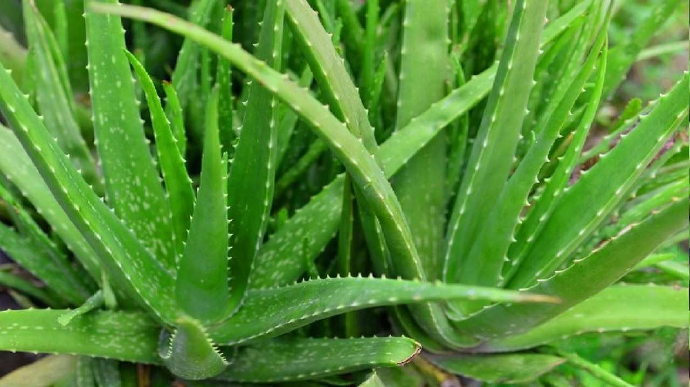

| Nombre | Categoria | Ventajas |
|---|---|---|
| Aloe Vera | Piel | Repara las quemaduras gracias a sus propiedades antiinflamatorias que desinflaman las zonas dañadas. Su uso diario hidrata y suaviza la piel actuando como un excelente regenerador celular. Debido a su alta penetración es un potente cicatrizante. |
| VALERIANA | Anti-estres | Es un sedante natural. Antidepresivo natural. Ayuda eliminar los síntomas de la ansiedad. Antiinflamatorio y analgésico. Trastornos digestivos. Promueve el buen descanso. |
| Alcachofa | ELIMINA GRASAS | Te ayuda a reducir la glucosa en sangre al mismo tiempo que te protege contra el estreñimiento y las diarreas, así como también alivia la acidez del estómago y eliminando el dolor |
| Amapola | PREVIENE AFECCIONES EN LA PIEL | Es una planta curativa de la que se usan las semillas. Con estas semillas se consigue prevenir enfermedades cardiovasculares, anemias o afecciones de la piel |
| Eucalipto | ALIVIA LOS SÍNTOMAS DEL RESFRIADO | Calma problemas como la gripe, el resfriado y el asma. Reduce los niveles de glicemia en la sangre. Fortalece el cabello. Sirve para desinfectar heridas. Es antiinflamatorio natural. Es un remedio antitusivo e inhibidor que permite eliminar la irritación de los bronquios. |
